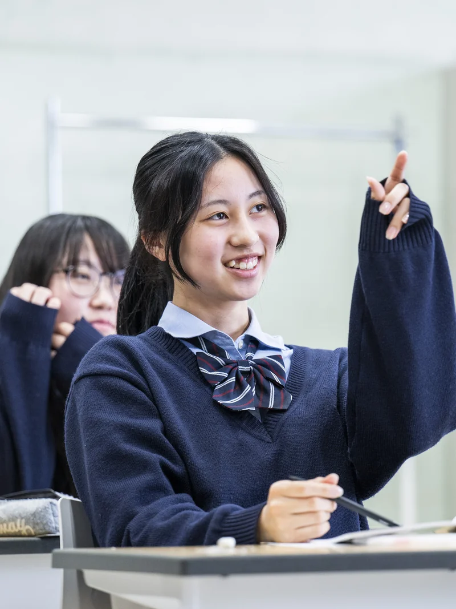
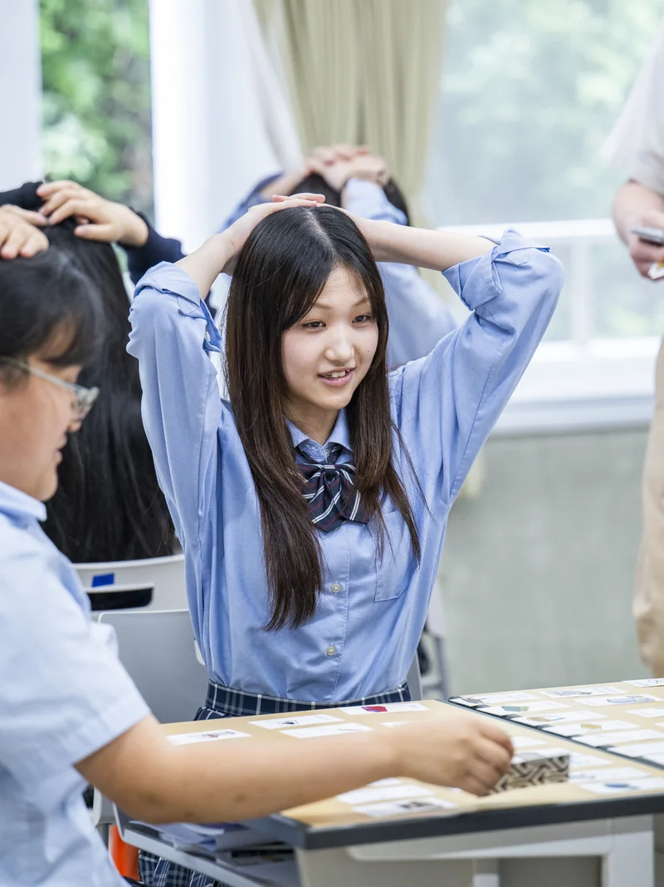
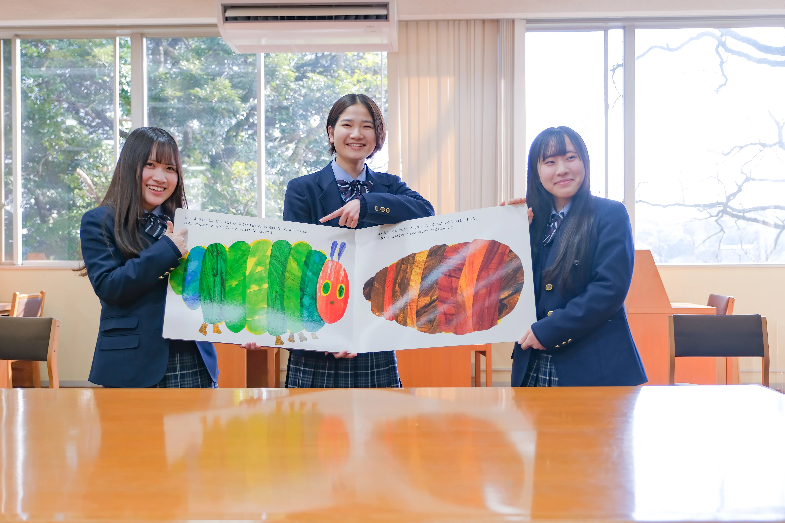
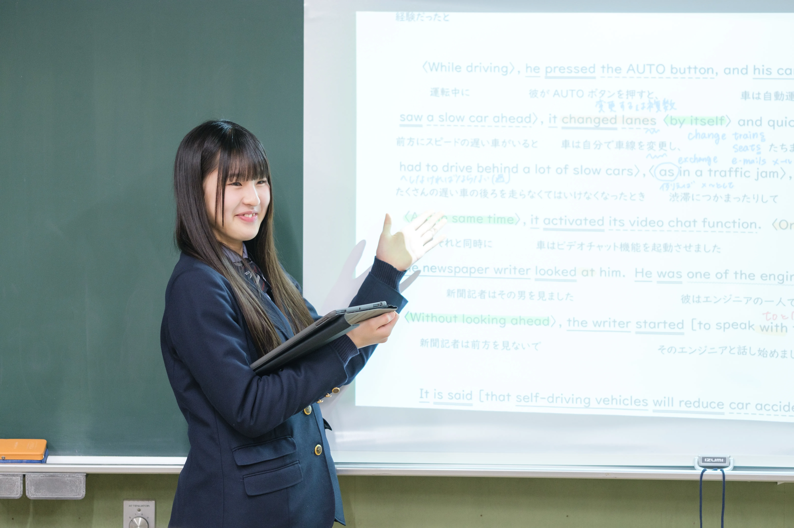
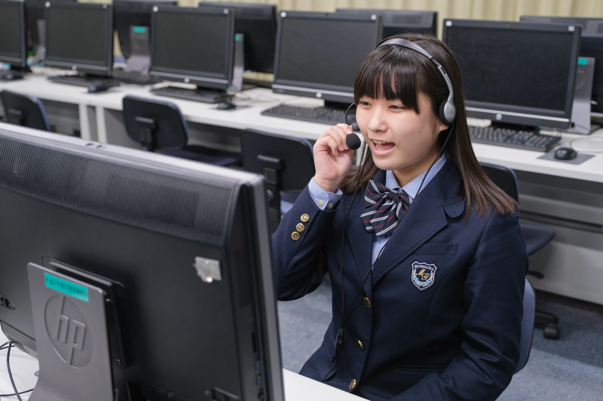
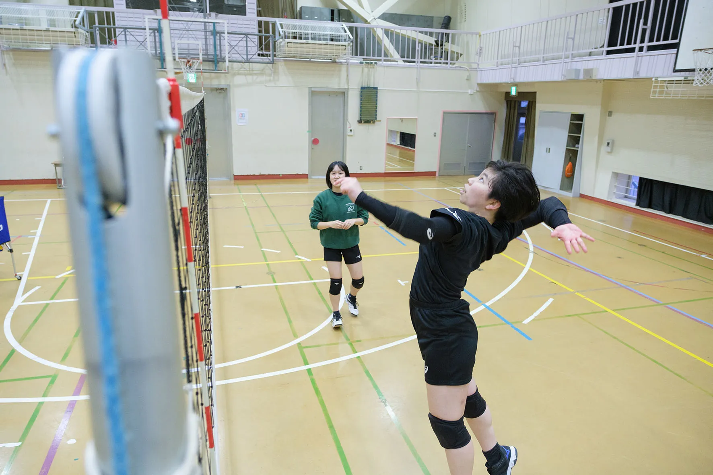
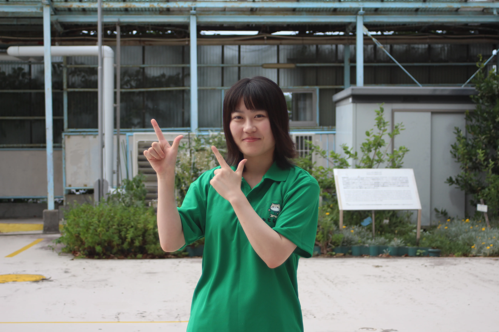
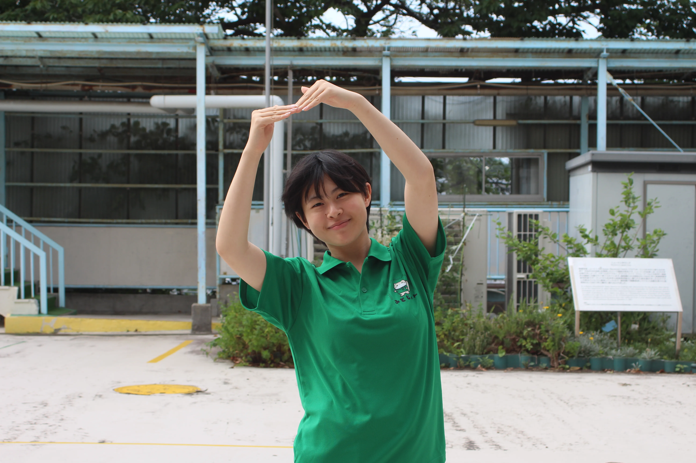
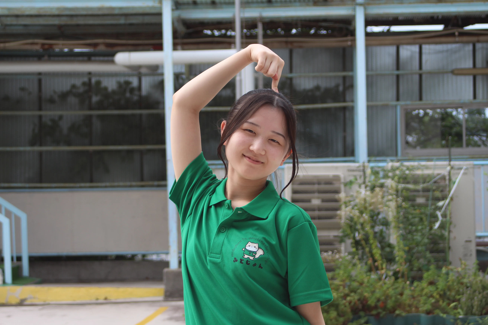
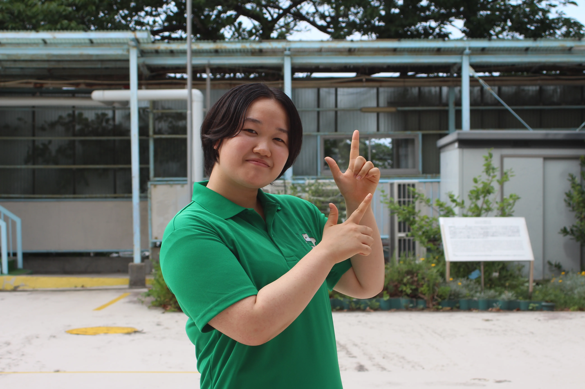

入学時は「2クラス制」だから、
やりたいことが決まってなくても安心
入学時はSクラス・Aクラスの2クラス制を採用。 受験のときに将来が決まっていなくても大丈夫。 1年間かけて基礎プログラムを体験しながら、 自分に合った道をじっくり見つけていけます。 国語・英語・数学は習熟度別授業で、 一人ひとりのペースに寄り添って伸ばします。
夢がある子も、まだ迷っている子も、
緑ヶ丘女子には居場所がある。
受験に向けて勉強する子、医療の現場で実習する子、幼稚園で子どもと向き合う子、自分の気になるを追求する子、資格取得に全力を注ぐ子、全国を目指して努力する子－
同じ校舎で、それぞれが「本物の経験」を積んでいきます。
あなたの「やってみたい」を、ここが本気でサポートします。
受け継がれてきた女子教育の歴史
の本格専門プログラム（2年次から）
のクラスで夢を見つける
2026年度より、新しい緑ヶ丘女子がはじまります。
入学時はSクラス・Aクラスの2クラス制を採用。 受験のときに将来が決まっていなくても大丈夫。 1年間かけて基礎プログラムを体験しながら、 自分に合った道をじっくり見つけていけます。 国語・英語・数学は習熟度別授業で、 一人ひとりのペースに寄り添って伸ばします。
1年次の経験をもとに、2年次から6つの専門プログラムを選択。 難関進学・看護医療・教育・探究・キャリア・スポーツと、 多様な進路に対応した本格的な学びがスタートします。 「やりたいこと」が明確になった2年次から、 一気に専門性を高めていけるのが緑ヶ丘女子の強みです。
体育館・学習スペースの利用はもちろん、 大学の講義への参加や本校への出張授業も実現。 大学の先生や先輩たちとの交流を通じて、 「卒業後の自分」をリアルにイメージできる環境が整います。
エンジェルルームは、安心できる空間で 心のケアや課題学習に取り組める場所。 学校に足が向かない時でも、私たちは生徒を支え続けます。 保健室・カウンセリングルームとも連携し、 心身の変化が大きい高校時代を、学校全体で支えます。
1年次はまず土台を。2年次から、本格的な専門の学びへ。
ハイレベルな授業展開で、難関大学進学を意識したクラス
多様な進路に対応した幅広い学びのクラス
上位大学進学を目指す
Sクラス所属条件医療・看護の道へ
保育・教育者を育てる
やりたいことを探す
専門職・資格取得へ
Aクラス所属条件競技と進学を両立
Aクラス所属条件年5回の個別面談を通じて、担任と一緒に「なりたい自分」を明確にしていきます。一人ひとりの夢を、学校全体で確実にサポートします。
入学時はSクラスまたはAクラスに所属します。 どちらのクラスからも、2年次以降の全プログラムへ進むことができます。
〜Special class〜
ハイレベルな授業展開で、選べる専門プログラム

大学現役合格をめざして実践力をつけるクラスです。 1年次から高い目標を設定し、日々の学習に取り組みます。 2年次・3年次には「6つの専門プログラム」から1つを選択し、 それぞれの夢の実現に向かいます。
英語・国語・数学は3年間、習熟度別授業を実施。春と夏の年2回クラス分けを行い、いつでも自分のレベルにぴったりフィットした授業が受けられます。英語はSクラス独自の授業も設定し、より多くの授業時数を確保して力を伸ばします。
Sクラスでは毎日、計算をはじめとして自分で取り組む習慣を大切にしています。課題に取り組むとともに自己解決力を深め、「おもしろい」「楽しい」に変えていける習慣を養います。
〜Advanced class〜
基礎から学び、幅広い未来選択へ
学力だけでなく、将来社会で生きていくうえで必要な 「主体性・課題発見力・計画力・判断力・規律性」を 身につけながら個性を引き出し続けます。 2年次〜3年次には「6つの専門プログラム」から1つを選択し、 それぞれの夢の実現に向かいます。
英語・国語・数学は3年間、習熟度別授業を実施。春と夏の年2回クラス分けを行い、自分のレベルにフィットした授業が受けられます。少人数のクラスで実施するため、しっかり・ゆっくり・着実に身につけられます。
部活動や様々な活動を通じて、自分の将来についてゆっくり考える時間を大切にします。「おもしろい」「楽しい」に変えていける習慣を養い、人間性の成長を促します。

気になるプログラムを選んで、詳しく見てみましょう。
英・数・国の放課後講座や夏期・冬期セミナーで、一般選抜に挑むための土台を徹底的に築きます。
大学進学講座・模試対策・過去問対策など、より実践的な学習で4年制大学合格を目指します。
きめ細やかな個別指導で、一人ひとりの学力を確実に引き上げます。
一般受験という真っ向勝負で私立難関大学への合格を目指す、独自の学習プログラム。このプログラムの最大の特徴は、ただ知識を詰め込むのではなく、志望校合格に直結する戦略的なカリキュラムを組んでいる点です！
日々の授業に加え、入試の傾向を徹底的に分析した「志望校対策講座」や、基礎から応用までカバーする「一般受験対策講座」を展開。学力試験に特化した学習環境を提供し、着実に合格へと導きます。長期休業には特別なセミナーを実施し、年間を通じた切れ目のない学びをサポートします。
私たちが大切にしているのは「自ら学ぶ力」です。自学自習の習慣づけや、そもそも効率的な学習スタイルをどう確立するかという根本的な部分から手厚くサポート！確かな学力を着実に育みます。
医療従事者を招いての講義や病院体験を通じて、看護の心得をリアルに学びます。
ナース服を着用し、病棟業務や患者交流を体験。医療人としての意識を高めます。
長年の実績を活かした専門的な入試対策で、看護系大学合格へ導きます。
将来、医療の現場で活躍することを夢見る生徒たちに向けて、高校段階から極めて専門性の高い学びを提供。系属校となった神奈川歯科大学との強力な連携により、2年生では大学のキャンパスで高校生向けに特別に開講される専門授業を受けることができます。大学の先生から直接、最新の医療知識を学べる環境は、他にありません！
より実践的な体験として、隣接する聖ヨゼフ病院での看護体験を実施。3日間の連続した実習では、実際にナース服を着て病棟を回り、現場の緊張感を肌で感じることができます。職業への理解を深めるだけでなく、学習への強いモチベーションにも繋がります。
日々の授業では、現役看護師の授業や、医療用語に特化した英語学習など、医療系進学を意識した独自のカリキュラムで着実に力を付けていきます。さらに、医療系に特化した進路指導を徹底しており、年内入試での着実な合格を目指せるサポートを充実させています。

実技と実習を並行して積み重ね、即戦力となる専門性を3年間で磨きます。
小学校実習にも対応し、幼児教育・初等教育の両方を体験できます。
多くの大学・短大に指定校枠があり、確実な進路実績を誇ります。
このプログラムでは、子どもたちの豊かな感性に直接触れる機会を大切にしています。隣接する横須賀幼稚園での通年実習をはじめ、保育所などでの多彩な実習を数多く実施します。現場での関わりを通じて、実践的な対応力を養います。
幼児教育の現場では欠かせないスキルの習得も学校内で完結できるようサポートしています。音楽科教員による個別のピアノレッスンに加え、ダンスや絵本の読み聞かせ、造形といった日々の授業を通じて、子どもたちの心に届く表現力を日常的に磨くことができます。
保育士や幼稚園教諭を目指す人はもちろんですが、小学校教諭を目指す人にとっても大きな強みとなります。児童の一歩手前である幼児の心理や成長過程を深く理解することで、一人ひとりに寄り添った教育ができる即戦力の教員を目指すことができます。

多様な職業人との出会いを通じて、自分の興味・適性を見つけていきます。
かながわ・ゆめ・みらいやアントレラボなど、校外の舞台で探究力を磨きます。
社会課題をテーマに現役医師・専門家へ取材し、ディスカッションイベントを主催した実績があります。
変化の激しい現代において、自ら課題を見出し、解決へと導く力は一生の財産となります。PBL（課題解決型学習）活動では、生徒一人ひとりが自分自身の「問い」を選択し、納得がいくまで追及していくプロセスを何より大切にしています。
仮説を立てて、調査し、多角的に分析、そこから自分なりの答えを導き出して発表し、さらに新たな課題に向き合っていく。この一連の「探究のサイクル」を繰り返すことで、思考力やプレゼン力といった、社会で確実に役立つ実践的なスキルを自然に、そして、好きなことを調べながら身につけていきます。
扱うテーマは、特定の分野に限定しません。幅広い分野を用意することで、多様な進路に向かっていく生徒たちの想いを大切にしています。

生徒の希望・適性に合わせて、多様な分野の専門学校から講師を招きます。
多様な資格試験への挑戦を学校全体で支援し、進路の可能性を広げます。
目標とする職業への最短ルートを探しながら、より広い可能性も視野に入れてサポートします。
専門学校進学や就職を見据え、自分の得意を活かしていち早く第一線で活躍したい生徒に最適なプログラムです。授業を通じて多様な資格取得を強力にサポートし、自身の能力を証明する武器を増やしていきます。
PCスキルや現代には必要不可欠なAI活用、英会話など、実社会に直結するカリキュラムを展開しています。
さらに、より自身の夢を具体化するため、専門学校の講師を招いた特別授業も用意しています。デザイン、IT、調理など、生徒の要望に合わせた分野の先生から直接指導を受ける機会を設けています。

新体操・バレーボールの強化指定部活動に所属する受験生を対象とした特別入試制度があります。
午前中に必修授業を集中して終わらせ、午後は思いきり競技に打ち込める時間割を実現。
体の仕組みや効果的なトレーニング理論も学び、スポーツを多角的に理解します。
本校では、技術だけでなく理論も座学で学ぶことで、根拠に基づいた確かな「スポーツ力」を養います。身体の仕組みやトレーニング理論を理解し、一生モノのパフォーマンス向上を目指します。
本プログラムは、特に強化指定クラブである新体操部とバレーボール部を極めたい生徒に最適です。他プログラムより多くの時間を部活動に充てられるカリキュラムにより、競技実績の積み上げに集中できます。
また、学外のクラブ活動にも深い理解を示し、早期から外部でのトレーニングに専念できるよう柔軟に調整します。充実したバックアップ体制のもと、文武両道を体現しながら、アスリートとしての夢を力強く後押しします。
実際に通っている生徒たちの言葉を、そのままお届けします。

「実習で、本物の看護が見えた。」
入学前は自信がなかったけど、病院実習の話を聞いて「やっぱり行きたい」ってはっきり決まりました。先生がすごく親身で、志望理由書も一緒に考えてくれます。

「塾なしで、第一志望に挑戦できる。」
放課後講座が充実していて、塾に行かなくても力がついている実感があります。少人数なので先生に質問もしやすいし、友達と一緒に頑張れる環境が好きです。

「幼稚園実習が、毎週の楽しみ。」
ピアノも保育実習もあって忙しいけど、子どもたちの笑顔を見るたびにやる気が出ます。緑ヶ丘に来て、夢がより具体的になりました。

「まだ迷ってていい、って言ってもらえた。」
将来がまったく決まっていなくて不安でした。でも1年生はいろんなプログラムを体験しながら考えられるので、焦らなくていいんだとわかって安心しました。